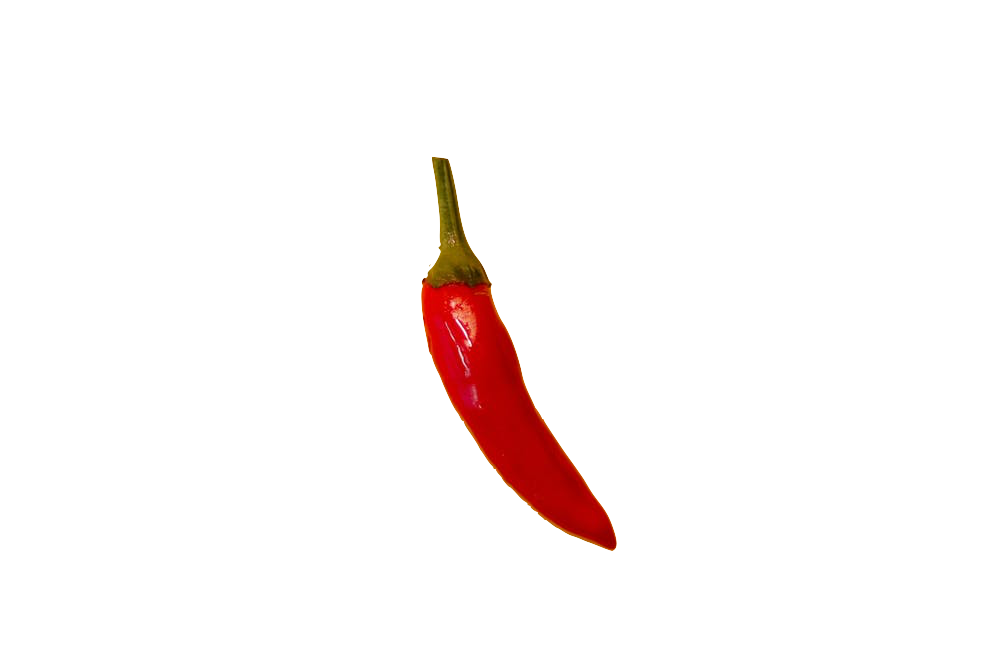

Sizzling Rice Soup
Wonton Soup
Egg Drop Soup
Hot & Sour Soup 
Chicken Corn Soup
Spicy Seafood Noodle Soup
Mussels, fish, shrimp, scallops and vegetables with
rice noodles.
Tom Yum
Classic Thai soup made with lemon grass and Thai herbs.
Chicken
Shrimp
Seafood (scallops, white fish, mussels & shrimp)
Tom Kha Gai
Thai herbs in coconut milk broth.
Chicken
Shrimp
Seafood (scallops, white fish, mussels & shrimp)
Pho
Vietnamese rice noodle soup.
Tai (beef)
Ga (chicken)
Tai Bo Vien (beef with meatballs)